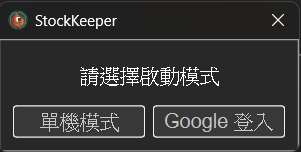
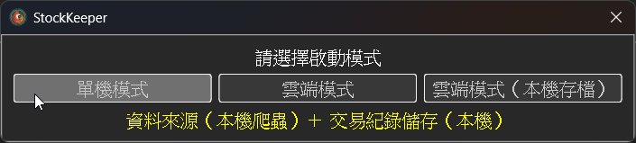
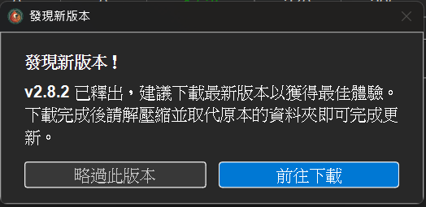
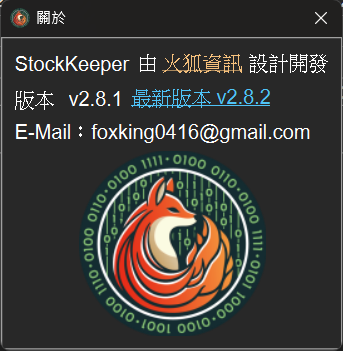

雲端模式登入與資料同步
從 v3.0.0 起，StockKeeper 正式支援雲端模式。 啟動程式後會出現啟動模式選擇視窗，使用者可以自由選擇要使用 單機模式或Google 登入進入雲端模式。

1、選擇單機模式
若選擇單機模式，將會與舊版本的操作方式完全相同， 可以選擇開啟暫存檔、開新檔案， 或開啟舊檔。

2、使用 Google 登入雲端模式
選擇 Google 登入 後，瀏覽器會開啟 Google 認證頁面， 完成授權即可登入您的專屬雲端帳號。
首次登入時，若程式偵測到本機已有單機檔案，會主動詢問是否要將舊資料自動匯入雲端， 讓你不必手動搬移、無痛轉移。
3、雲端模式的特性
雲端模式的操作體驗與單機版幾乎一致，差異如下：
● 資料儲存在雲端伺服器，不同電腦登入同一個 Google 帳號就能看到同一份資料。
● 隨時可將雲端資料下載到本機備份，資料不會被雲端版綁定。
4、版本更新提示
從 v3.0.0 起，當有新版本釋出時，程式會主動跳出發現新版本視窗， 點擊前往下載即可直接前往最新版下載頁面， 不再需要自行到網站確認。

使用者也可以隨時從關於視窗確認目前版本與最新版本資訊。

5、關於雲端版營運
雲端版的爬蟲、資料庫、伺服器、數位認證每月需要支付數千元的營運成本， 因此後續會逐步推出付費方案，讓有需求的使用者可以更穩定地使用雲端服務。 單機版仍會持續維護，使用者可依需求選擇適合自己的模式。